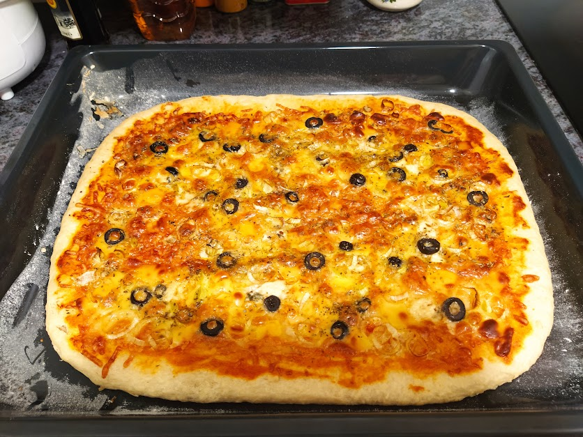

Stuffed Bread

This stuffed bread it is an old recipe of my mom. With this bread dough you can do an amazing stuffed breads using all the ingredients that you imagination can think of to put it inside as filling.
You may also open this dough and use as a pizza dough to make delicious homemade pizzas!
So, let's do it?
Ingredients:
- Enough Wheat Flour to thicken the dough (usually 500 grams)
- A tablespoon of Yeast
- A dessert spoon of Salt
- A dessert spoon of Sugar
- One glass of Water
- One glass of Soybean oil
Steps:
- Put the yeast and the spoonful of sugar in a bowl and stir until it becomes liquid.
- Add the glass of water and oil.
- Add the spoonful of salt.
- Mix everything together and add flour little by little.
- Stop adding flour as soon as the dough starts to come off the bowl.
- Cover the bowl with a kitchen towel and let the dough rise for a few hours.
- The dough is ready! Now all you have to do is roll out the dough to fill it like a stuffed bread or as pizza dough!
Tips:
Now use your creativity to fill the bread with cheese, spinach, dried tomatoes, black olives... There is a world out there full of possibilities!
If you are doing this recipe to do a pizza, don't forget to put a tomato sauce on top of the dough, cheese, and again, everything that you can think of! How about a delicious mushroom pizza? Don't forget the oregano!
